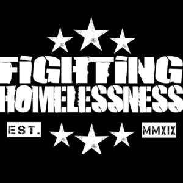

Trade Mark Journal No.2025/043 24 October 2025
UK00004271201 29 September 2025 (41,43,44)

- Class 41
- Adult education services; Arranging, conducting, managing, organising, planning, producing and providing sporting, coaching, recreational, leisure and entertainment events, classes, competitions and activities; Arranging, conducting, managing, organising, hiring, planning, producing and providing facilities, equipment, studios, tournaments, and instruction in relation to fitness and exercise; Arranging and conducting of entertainment and sporting events for charitable fundraising purposes; Boxing instruction; Coaching; Creation and production of educational, sporting, coaching, recreational, leisure and entertainment content for podcasts, videos and films; Education and training services; Electronic publication; Entertainment; Exercise and fitness classes; Gymnasium services; Health and wellness training; Health club services; Health education; Instruction in martial arts; Leisure and recreational services; Organization of boxing matches; Personal trainer services; Physical fitness instruction; Providing leisure and recreation facilities; Providing on-line non-downloadable audio and video content; Provision of training courses; Provision, hire and rental of sporting, coaching, recreational, leisure and entertainment facilities and equipment; Publication of multimedia material online; Publication of educational information; Publishing; Recreation and training services; Sports and fitness services; Teaching; Training related to nutrition; Training in martial arts; Training in sports; Training services in the field of medical disorders and their treatment; Vocational education relating to avoidance of health-related problems; information, consultancy and advice in relation to the foregoing.
- Class 43
- Accommodation services; Arranging, booking and providing temporary accommodation; Catering for the provision of food and beverages; Catering services; Charitable services, namely providing food and drink catering; Charitable services, namely providing temporary accommodation; Emergency shelter services [providing temporary housing]; Providing assisted living facilities in the nature of temporary accommodation; Providing community centres for social gatherings and meetings; Provision of food and drink; Provision of temporary lodgings; Rental of temporary accommodation; Hostel services; Temporary accommodation services; information, consultancy and advice in relation to the foregoing.
- Class 44
- Advisory services relating to health care; Dietary and nutritional counselling, advice, guidance and information; Health advice and information services; Health counselling; Health counselling and consultancy; Health risk assessment; Health screening; Mental health services; Physiotherapy; Providing mental health rehabilitation facilities; Provision of health care services; Provision of health information; Therapy services; information, consultancy and advice in relation to the foregoing.
Robert Green
Representative: LEGALVISION LAW UK LTD